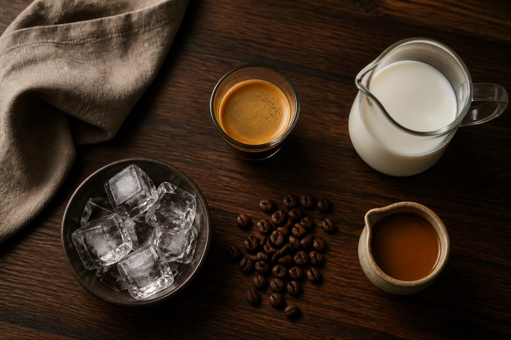
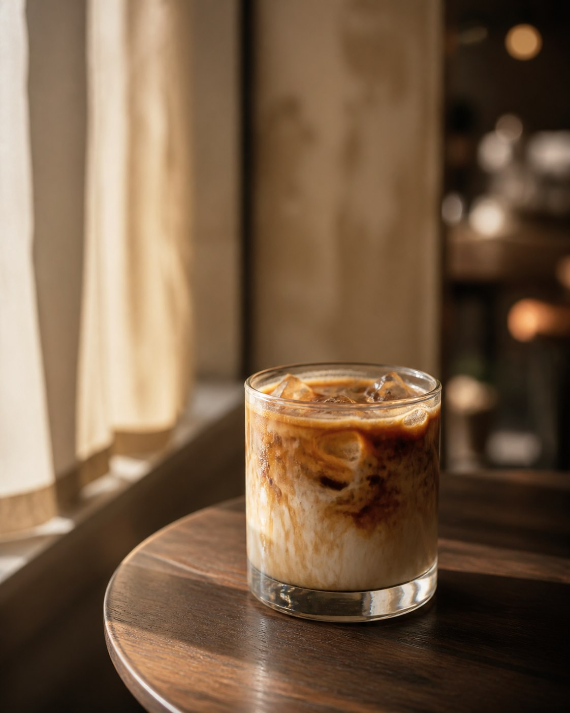
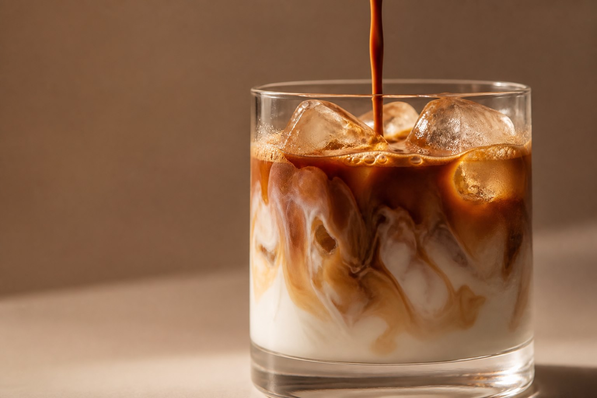
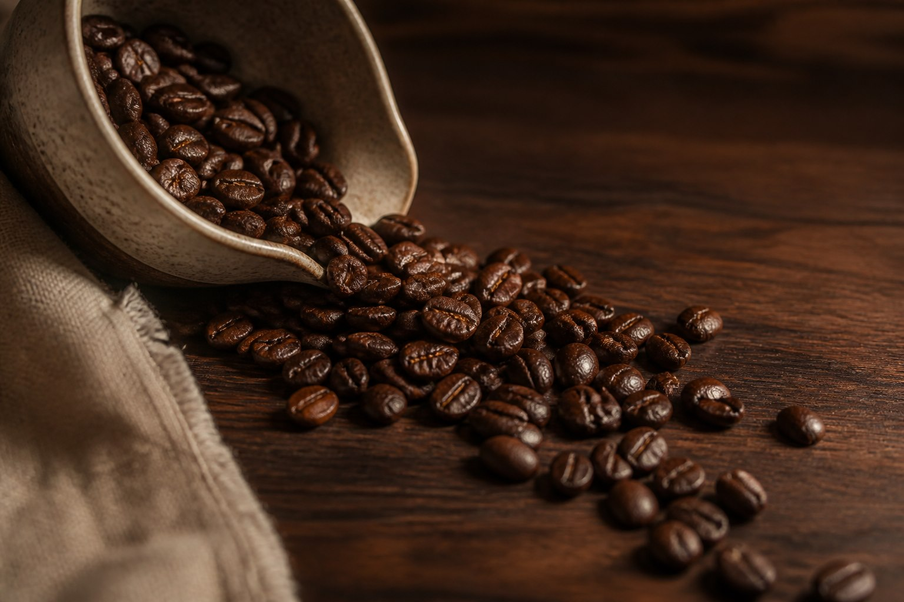
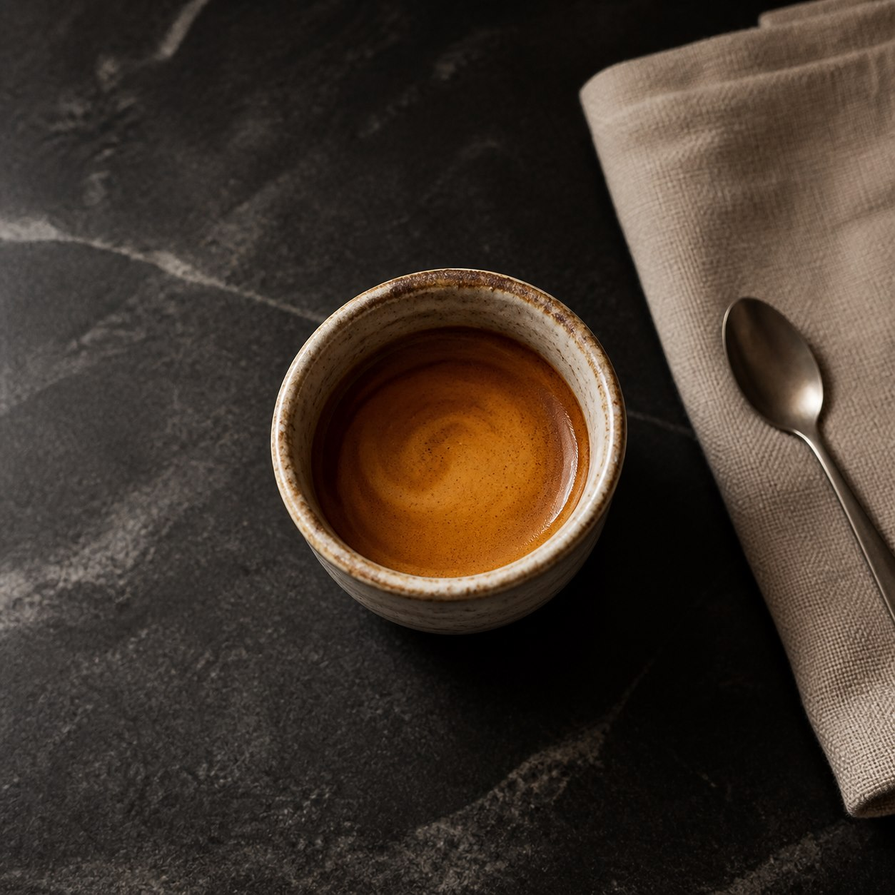
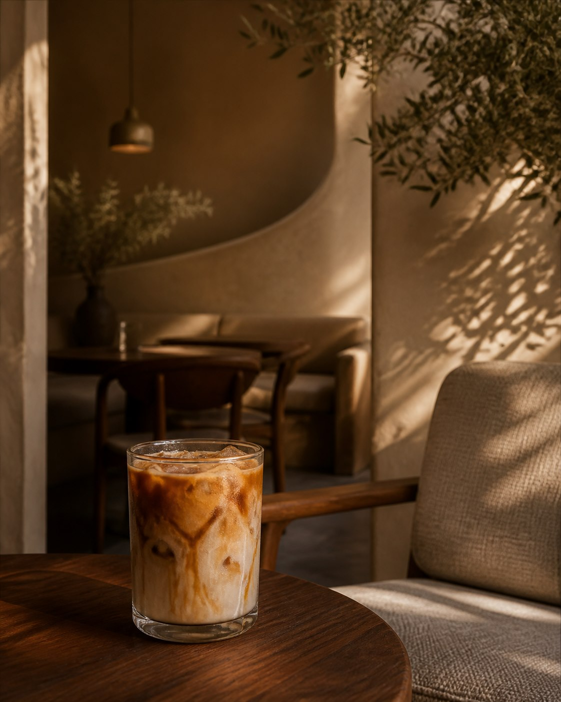

The beginning
It begins with a pause.
An empty glass, a quiet moment, and the promise of something worth slowing down for.
Preparing your pour
The beginning
An empty glass, a quiet moment, and the promise of something worth slowing down for.
01 - The chill
Crystal-clear ice tumbles in, catching the light before the coffee begins.
02 - The bold
Deep espresso flows around every cube, building a rich and aromatic foundation.
03 - The balance
Silky milk blooms through the espresso in slow, delicate waves.
04 - The finish
Warm caramel folds into the coffee like silk - sweet, smooth, and never too much.
Iced caramel latte
Bold espresso. Silky milk. Golden caramel. One beautifully unhurried cup.
The blend
Slow Pour brings together bold espresso, silky milk, and golden caramel in one balanced, refreshing drink.
Not too strong. Not too sweet. Just smooth from the first sip to the last.
A rich coffee foundation with warm roasted notes and a clean finish.
Double shotA soft, silky layer that balances every pour without muting the coffee.
Whole, oat, or almondA warm sweetness with a buttery finish that lingers just enough.
House caramel Double espresso
House caramel
Double espresso
House caramel
Inside your glass
Every layer has a purpose: deep espresso for structure, cold milk for texture, and just enough caramel to round the edges.
The house build is a starting point. Milk, sweetness, ice, and espresso can all move with your mood.
Make it yours
Choose your milk, adjust the sweetness, and shape a cup that fits your moment.

5 minutesThe house recipe
A café-style iced caramel latte with a bold center and a soft finish—no complicated equipment required.
Fill a 16 oz glass generously with large, fresh ice cubes.
Add 6 oz of cold milk and stir in 3 teaspoons of caramel.
Brew two fresh espresso shots—about 2 oz in total.
Stream the espresso over the ice, pause for the marble, then stir.
No espresso machine? Use 2 oz of strong moka pot coffee or cold brew concentrate.
Brew better
Four habits that make every home-brewed cup taste cleaner, sweeter, and more intentional.
Buy in small batches and grind just before brewing. Aroma fades quickly once coffee is ground.
Best within 2–4 weeks of roastFiltered water gives coffee a cleaner canvas. For hot brewing, stay just below a full boil.
Ideal range: 92–96°CMeasure both coffee and water so a great cup is easy to repeat, then adjust by taste.
Start around 1:16Use large, dense cubes and cool the drink quickly. Small melting ice can flatten your flavor.
Bigger ice, slower dilutionGood coffee is rarely about doing more. It is about giving a few important details your full attention.
Pour studies
Morning light, the ingredients before they meet, and the marble that makes us stop and look.

First light The quiet before the day begins.

The bloom Espresso finding its way through milk.
Before the pour A few good ingredients, measured with care.

The roast Warm, fragrant, and ready to become something good.

Small and bold A concentrated beginning with a golden finish.

Stay awhile A quiet corner and nowhere else to be.
For early starts.
For slow afternoons.
For conversations that last longer than expected.
Love at first pour
“Rich without being heavy. The caramel lands exactly where it should.” - Nina
“The kind of coffee you sit down for instead of drinking on the run.” - Eli
“Smooth, creamy, refreshing - and somehow still bold.” - Mara
Your moment is ready
Your iced caramel ritual is waiting.